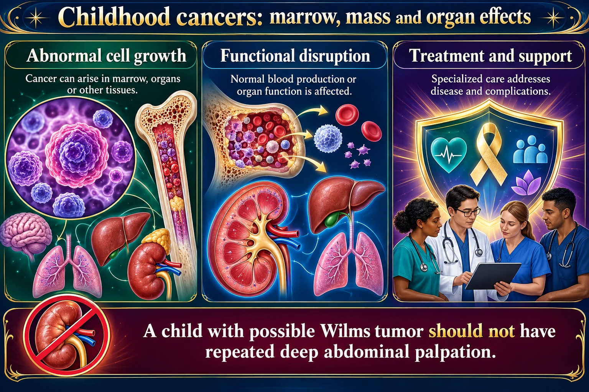

🎈 Childhood Cancers
Leukemia, Wilms tumor, neuroblastoma, retinoblastoma — and the abdomen you must never palpate.
🩸 Leukemia — the commonest

A Wilms tumor has a fragile capsule and pressing on it can seed the cancer. That sign goes over the crib.
A child with possible Wilms tumor should not have repeated deep abdominal palpation.
Read the picture
Abnormal cell growth
Cancer can arise in marrow, organs or other tissues.
Functional disruption
Normal blood production or organ function is affected.
Treatment and support
Specialized care addresses disease and complications.
Leukemia
Marrow involvement can cause anemia, infection risk and bleeding.
Solid tumors
Persistent mass, bone pain or neurologic findings require evaluation.
Nursing priorities
Monitor infection, bleeding, pain, nutrition and treatment toxicity.
The marrow fills with immature white cells, so it cannot make anything else. Every symptom follows from that crowding.
| What is crowded out | Result | You see |
|---|---|---|
| Red cells | Anemia | Pallor, fatigue, breathlessness |
| Neutrophils | Neutropenia | Fever and infection — the biggest killer |
| Platelets | Thrombocytopenia | Bruising, petechiae, nosebleeds |
| Marrow space | Expansion | Bone and joint pain, limping |
ALL is the commonest childhood cancer, peaks at 2–5 years, and has a high cure rate — important to say to parents early.
Fever with ANC under 500 is an emergency. Cultures and IV antibiotics within the hour.
No rectal temperatures, suppositories or enemas. No IM injections when platelets are low. No aspirin or NSAIDs.
🧠 Why allopurinol is given
When chemotherapy kills large numbers of cells, they release purines that become uric acid, which can crystallize in the kidneys.
Allopurinol plus generous hydration prevents that — part of preventing tumor lysis syndrome (high potassium, high phosphate, high uric acid, low calcium).
🚨 The solid tumors
| Tumor | Signature | Key point |
|---|---|---|
| Wilms tumor (nephroblastoma) | Firm, smooth abdominal mass, usually one side, often found on diaper change or bathing | DO NOT PALPATE THE ABDOMEN |
| Neuroblastoma | Irregular abdominal mass crossing the midline; often already metastatic at diagnosis | Also do not palpate; usually under 5 years |
| Retinoblastoma | White pupillary reflex (leukocoria) instead of red reflex; squint | Often noticed first in a photograph |
| Osteosarcoma | Pain and swelling near the knee in an adolescent; worse at night | Long bone metaphysis |
| Ewing sarcoma | Pain, swelling, fever; shaft of long bones and pelvis | Younger than osteosarcoma on average |
| Brain tumors | Morning headache with vomiting, ataxia, changed behavior | Signs of raised ICP |
Never palpate a suspected Wilms tumor. Pressure can rupture the capsule and seed cancer cells through the abdomen. Put a sign on the crib and tell every person who comes near.
Retinoblastoma is why the red reflex is checked at every well-child visit. A white reflex in a photograph is a genuine reason for urgent referral, and parents often spot it first.
🩺 Living through treatment
✅ Neutropenic precautions
- Hand hygiene above everything else
- Private room; screen visitors and staff for infection
- No fresh flowers, plants or standing water
- No raw fruit or vegetables; no undercooked food
- Daily soft-brush oral care; check for mucositis
- No live vaccines for the child or household contacts
💉 Side effects and what helps
| Effect | Care |
|---|---|
| Mucositis | Soft brush or sponge, saline rinses, bland cool foods. No alcohol-based mouthwash, no lemon-glycerine swabs |
| Nausea | Antiemetics before chemotherapy, not after it starts |
| Alopecia | Prepare the child; hats, caps; hair grows back |
| Fatigue | Cluster care; short activity with rest |
👅 Mucositis — the one they ask about
Why it happens: chemo kills any rapidly dividing cell, and oral mucosa turns over every 7–14 days. The same lining runs the whole gut, so ulcers can appear from lip to anus.
When: about 5–10 days after chemo starts; it heals as the ANC recovers. What you see: redness → white patches → open ulcers, with pain, drooling, bad breath, and a child who will not eat or drink.
| ✅ Do | ❌ Never |
|---|---|
| Soft toothbrush or foam swab; normal saline (or saline + baking soda) rinses q2–4h and after meals | Alcohol mouthwash — burns and dries the ulcers |
| Analgesia and topical anesthetic before the meal, so she can actually eat | Lemon-glycerine swabs — dry the mucosa, erode enamel |
| Bland, soft, cool — popsicles, ice chips, milkshakes, straws | Hydrogen peroxide — destroys new granulation tissue |
| Inspect the mouth daily; track intake and weight | Flossing on low platelets · rectal temps — the ulcers go all the way down |
🚨 Escalate: mucositis in a neutropenic child is an open door to the bloodstream. New white plaques = candidiasis (nystatin); clustered vesicles = herpes. Either one with a fever is a sepsis workup. Cannot swallow → IV fluids.

🧠 Talking to the child by age
- Toddler / preschool — say plainly it is not a punishment; keep the parent present
- School age — explain what the treatment does; give them jobs and choices; they worry about school and friends
- Adolescent — body image and fitting in matter enormously; confidentiality; involve them in decisions
Encourage school attendance and normal activity whenever counts allow — normality is protective.
🎯 NCLEX traps
- Never palpate a Wilms tumor abdomen
- White pupil = retinoblastoma
- Fever + ANC < 500 = emergency
- No rectal anything; no aspirin
- Allopurinol + fluids prevent uric acid stones
- Neuroblastoma crosses the midline; Wilms usually does not